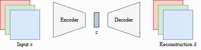

Autoencoders#
Autoencoders (AE) are trained on encoding input data into a smaller feature vector, and afterward, reconstruct it by a second neural network, called a decoder. The feature vector is called the bottleneck of the network as we aim to compress the input data into a smaller amount of features. This property is useful in many applications, in particular in compressing data or comparing images on a metric beyond pixel-level comparisons.
Building an Autoencoder#
An autoencoder learns to reproduce its input by passing it through a bottleneck that forces a compact representation. An encoder \(f_\theta\) maps an input \(\mathbf{x}\) to a latent code \(\mathbf{z}\), and a decoder \(g_\phi\) maps \(\mathbf{z}\) back to a reconstruction \(\hat{\mathbf{x}}\):
Training minimizes a reconstruction objective \(\mathcal{L}(\theta,\phi)=\mathbb{E}_{\mathbf{x}}\big[\ell(\hat{\mathbf{x}},\mathbf{x})\big]\). The choice of \(\ell\) should match the data type and an assumed noise model: mean-squared error corresponds to Gaussian likelihoods for continuous data; binary cross-entropy fits Bernoulli observations; categorical cross-entropy suits discrete tokens; Poisson losses are common for count data. The goal is a code \(\mathbf{z}\) that preserves information needed to rebuild \(\mathbf{x}\) while discarding redundancy.
Architecturally, autoencoders adapt to the modality. For tabular vectors, \(f_\theta\) and \(g_\phi\) are multilayer perceptrons; for images, a deep convolutional network that progressively reduces spatial resolution while increasing channel capacity. In latter case, a practical design applies a sequence of strided convolutions to downsample the input three times, shrinking height and width by a factor of \(2\) at each step. The resulting feature map is flattened and projected with one or more fully connected layers to a vector \(\mathbf{z}\in\mathbb{R}^d\). The dimensionality \(d\) (the bottleneck width) defines the strength of the bottleneck. You choose \(d\) to balance compression vs. fidelity: smaller \(d\) enforces stronger compression and encourages the network to learn compact, task-relevant structure; larger \(d\) eases reconstruction but risks passing through unnecessary detail.
The decoder usually (but not necessarily) mirrors this process in reverse, expanding \(\mathbf{z}\) back to the original shape and producing \(\hat{\mathbf{x}}\) whose similarity to \(\mathbf{x}\) is optimized by the chosen reconstruction objective. The only difference is that we replace strided convolutions by transposed convolutions (i.e. deconvolutions) to upscale the features. Transposed convolutions can be imagined as adding the stride to the input instead of the output, and can thus upscale the input.

Note that in AEs Batch Normalization is seldom applied. This is because we want the encoding of each image to be independent of all the other images. Otherwise, we might introduce correlations into the encoding or decoding that we do not want to have. In some implementations, you still can see Batch Normalization being used, because it can also serve as a form of regularization. Nevertheless, the better practice is to go with other normalization techniques if necessary like Instance Normalization or Layer Normalization.
Out-of-distrubution Images#
Before continuing with the applications of autoencoder, we can actually explore some limitations of our autoencoder. For example, what happens if we try to reconstruct an image that is clearly out of the distribution of our dataset? We expect the decoder to have learned some common patterns in the dataset, and thus might in particular fail to reconstruct images that do not follow these patterns.
In general, autoencoders tend to fail reconstructing high-frequent noise (i.e. sudden, big changes across few pixels) due to the choice of MSE as loss function (see our previous discussion about loss functions in autoencoders). Small misalignments in the decoder can lead to huge losses so that the model settles for the expected value/mean in these regions. For low-frequent noise, a misalignment of a few pixels does not result in a big difference to the original image. However, the larger the latent dimensionality becomes, the more of this high-frequent noise can be accurately reconstructed.
Variational Autoencoders#
Variational autoencoders (VAEs) are a generative version of the autoencoders, i.e. probabilistic autoencoders. A VAE pairs a decoder \(p_\theta(\mathbf{x}\mid \mathbf{z})\) that generates data from a latent vector \(\mathbf{z}\) with an encoder \(q_\phi(\mathbf{z}\mid \mathbf{x})\) that approximates the (intractable) posterior over latents. We assume a simple prior \(p(\mathbf{z})=\mathcal{N}(\mathbf{0},\mathbf{I})\), which regularizes the latent space to follow a Gaussian distribution while, in vanilla autoencoders, we do not have any restrictions on the latent vector. Generated values are, then, sampled by drawing \(\mathbf{z}\sim p(\mathbf{z})\) and decoding \(\mathbf{x}\sim p_\theta(\mathbf{x}\mid \mathbf{z})\).
The ELBO#
The variational identity behind VAEs is
Since the last term is non-negative, \(\mathcal{L}\) is a lower bound on the exact log-likelihood. Maximizing the ELBO therefore both increases data likelihood and pulls the approximate posterior \(q_\phi(\mathbf{z}\mid\mathbf{x})\) toward the true posterior \(p_\theta(\mathbf{z}\mid\mathbf{x})\); the bound becomes tight when these two posteriors coincide.
Maximizing the exact log-likelihood \(\log p_\theta(\mathbf{x})\) is intractable, so VAEs maximize the evidence lower bound (ELBO):
The first term pushes reconstructions to match the data; the second keeps the inferred latents close to the prior, giving a well-structured latent space.
The link to common reconstruction losses comes from the choice of likelihood \(p_\theta(\mathbf{x}\mid\mathbf{z})\). If \(p_\theta(\mathbf{x}\mid\mathbf{z})\) is factorized Bernoulli (typical for data in \([0,1]\)), then
with \(\hat{x}=\sigma(f_\theta(\mathbf{z}))\). The negative of this is exactly the binary cross-entropy. Thus, maximizing the reconstruction term is equivalent to minimizing BCE, up to the expectation over \(q_\phi(\mathbf{z}\mid\mathbf{x})\) (often approximated by one or a few samples).
If \(p_\theta(\mathbf{x}\mid\mathbf{z})\) is Gaussian with fixed variance \(\sigma^2 I\) and mean \(\mu_\theta(\mathbf{z})\), then
so maximizing the reconstruction term is equivalent to minimizing mean squared error, again up to a constant and a scale factor \(1/(2\sigma^2)\). When \(\sigma^2\) is learned (heteroscedastic Gaussian), the reconstruction becomes a weighted MSE plus a penalty on the predicted log-variance.
In short, the VAE objective is negative reconstruction loss (BCE or MSE as implied by the likelihood) plus a KL penalty on the latents. Choosing BCE vs. MSE is not arbitrary: it encodes your assumption about the observation noise model—Bernoulli-like for bounded binary/normalized data, Gaussian for continuous data with additive noise.
Reparameterization trick#
To backpropagate through sampling, write a Gaussian posterior as
turning the stochastic node into a deterministic function of \(\mathbf{x}\) and noise.
What do the networks output?#
Encoder \(q_\phi(\mathbf{z}\mid \mathbf{x})\): outputs \(\boldsymbol{\mu}_\phi(\mathbf{x})\) and \(\boldsymbol{\sigma}_\phi(\mathbf{x})\) (often diagonal Gaussian).
Decoder \(p_\theta(\mathbf{x}\mid \mathbf{z})\): outputs parameters of a likelihood matching the data type (e.g., Gaussian mean/variance for standardized continuous data; Bernoulli or discretized logistic for images in \([0,1]\)).
Training in practice#
For each minibatch:
Encode \(\mathbf{x}\rightarrow (\boldsymbol{\mu},\boldsymbol{\sigma})\).
Sample \(\mathbf{z}=\boldsymbol{\mu}+\boldsymbol{\sigma}\odot \boldsymbol{\epsilon}\).
Decode to get \(p_\theta(\mathbf{x}\mid \mathbf{z})\) and compute the ELBO.
Take a gradient step on \(-\mathcal{L}\).
Report ELBO (or negative ELBO). For images, bits-per-dimension (bpd) is common: \(\text{bpd} = -\log_2 p_\theta(\mathbf{x}) / (H\!\times\!W\!\times\!C)\).
Common pitfalls and fixes#
Posterior collapse (decoder ignores \(\mathbf{z}\)): use KL warm-up/annealing, limit decoder capacity, or “free bits” (minimum KL per latent).
Discrete data: dequantize (add small uniform noise) or use a discretized likelihood.
Calibration: VAEs provide likelihoods; use held-out ELBO/bpd and sample quality to assess fit.
VAEs and probabilistic PCA (PPCA)#
Probabilistic PCA reframes classical PCA as a generative, uncertainty-aware model. Instead of seeking a deterministic low-dimensional projection, PPCA posits hidden variables \(z\) drawn from a simple prior (usually \(\mathcal{N}(0,I)\)) and generates data \(x\) through a linear “decoder” plus isotropic Gaussian noise: \(x \approx Wz+\mu+\varepsilon\) with \(\varepsilon\sim \mathcal{N}(0,\sigma^2 I)\). This view turns dimensionality reduction into density estimation: the model assigns a likelihood to every \(x\) and provides posterior uncertainty over the latent coordinates \(z\). Unlike PCA, which yields only point embeddings, PPCA gives a full Gaussian posterior for \(z\) and a principled way to handle missing values via exact inference or EM.
Seen through the lens of variational autoencoders, PPCA is the linear–Gaussian special case of a VAE. The VAE’s prior \(p(z)=\mathcal{N}(0,I)\) matches PPCA’s latent prior; the VAE decoder \(p_\theta(x\mid z)\) reduces to PPCA’s linear Gaussian \( \mathcal{N}(Wz+\mu,\sigma^2 I)\) when the decoder is linear and uses fixed isotropic variance; and the VAE encoder \(q_\phi(z\mid x)\) corresponds to PPCA’s exact Gaussian posterior. In this regime the VAE’s evidence lower bound equals the exact log-likelihood, so variational inference is tight and amortized encoders recover the same posterior mean as PPCA’s analytic solution. Replacing the linear decoder with neural networks and allowing data-dependent variance turns PPCA into a nonlinear VAE, trading closed-form inference for flexibility: PPCA delivers interpretability, calibrated Gaussian uncertainty, and tractable training; VAEs inherit PPCA’s probabilistic structure while extending it to capture curved manifolds, complex conditional noise, and multimodal data via richer priors and decoders.